MIT让GPT-6 Astra直接修改Qwen权重！数学成绩飙升
机器之心编辑部
如果把一个训练好的神经网络摊开，只给大模型看一串权重数字，它能看出这个模型学会了什么吗？甚至能直接修改其中一小部分参数，让模型变得更聪明？
这听起来有些不可思议。MIT CSAIL 团队最新公布的一组实验，却让这个设想有了初步的现实依据。
团队让 GPT-6 Astra 直接检查 Qwen3.5-0.8B 的内部权重，找到了导致模型反复陷入推理循环的关键问题。随后 Astra 只修改了约 0.016% 的参数，就将模型在 MATH-500 上的成绩从 7.9% 提升至 48.1%，指令遵循能力也提升了近两倍。整个过程没有重新训练模型，也没有使用梯度下降。
更有意思的是，Astra 还尝试从零编写神经网络权重。在没有训练数据、梯度和训练过程的情况下，它生成的游戏策略网络，甚至超过了经过 1 亿步 PPO 训练的模型。团队将这种新能力称为 Weight-Space Programming（权重空间编程）。
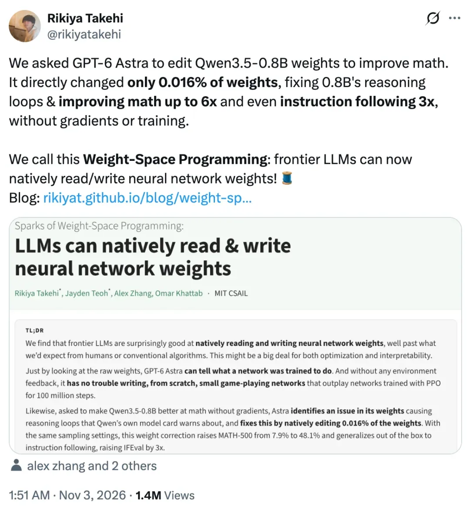
这意味着，大模型开始尝试直接理解神经网络内部的参数结构，找到问题所在，再动手修改模型本身。
从 AI 帮助人类训练模型，到 AI 开始直接参与模型权重的优化，这条路线可能为模型研发和递归自我改进（RSI）打开新的空间。
以下为博客全文编译（第一人称叙事）：
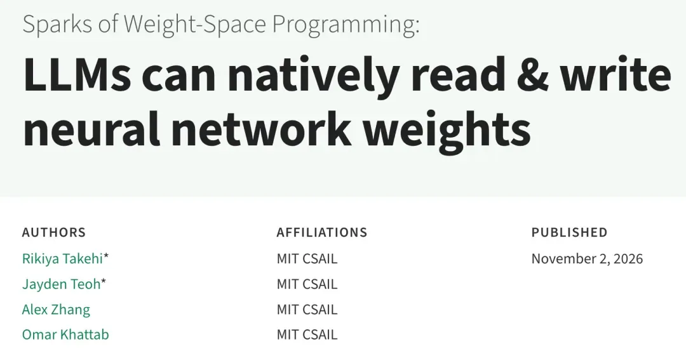
如果让你从头手工设计一个会下围棋的神经网络，你会怎么做？如果直接给你一组神经网络的原始权重，让你判断这个网络会表现出什么行为，你又该从哪里下手？
对绝大多数人来说，这几乎是不可能完成的任务。
目前，神经网络的权重通常通过优化算法生成，也可以由专门训练来生成权重的网络写出，或者通过编译器将形式化程序转换而来。
但我们发现，当前一代前沿大语言模型已经开始展现出一种令人意外的能力：只需通过自然语言与它们交互，它们就能理解神经网络权重，并按照自然语言提出的目标来构造权重。
权重空间编程
过去几年，我们一直在用大语言模型优化各种文本产物，比如提示词，以及围绕提示词搭建的程序。最近，我们又开始让它们优化整套运行框架（harness），以及用于训练机器学习模型的代码和超参数。
我们过去之所以认为这种做法合理，主要是因为：对于文本产物，我们还没有找到像更新可微神经网络权重那样成熟、明确的优化方法。
毕竟，人类可以手动修改代码，因此让大语言模型来完成这项工作很自然。但人类无法靠手工直接优化神经网络权重，所以这部分工作长期以来主要由各种算法完成。
本文中，我们分享了一组非常早期的实验结果。这些结果让我们看到，由模型推理驱动的优化方式，正在进入可微神经网络领域。我们将这种方式称为权重空间编程。
具体来说，就是让一个通用大语言模型根据自然语言描述的要求，直接读取和修改神经网络的权重。整个过程不需要经过优化器，尤其不使用梯度下降。有些情况下，甚至不需要任何来自运行环境的反馈。
现在，我们已经可以直接用自然语言要求大语言模型完成一些过去很难想象的任务：从神经网络权重中找出隐藏的特征或缺陷，修复网络存在的问题，甚至从零开始写出一个新的神经网络。
下面，我们会介绍这方面的一系列早期实验，先从小型网络开始，再逐步扩展到真正的语言模型。
这项研究主要展示了三种能力：
- 大语言模型能够读取神经网络权重。 在实验 1 至实验 3 中，我们让 Astra 判断一个网络经过训练后学会了玩什么游戏、一个扩散模型会生成什么形状，以及一个小型语言模型使用什么语言进行训练。在实验 7 中，我们还让它判断两个语言模型中，哪一个经过了迎合用户的训练。
- 大语言模型能够修复神经网络权重。 在实验 4 中，我们让 Astra 修复一个无法完成物理控制任务的网络。在实验 8 中，我们让它通过修改权重提高 Qwen3.5-0.8B 的数学能力，结果发现，指令遵循能力也随之提升。
- 大语言模型能够从零编写神经网络权重。 在实验 5 中，我们让 Astra 为三款 MinAtar 游戏编写网络；在实验 6 中，则让它编写一个能够下围棋的网络。
大语言模型能从权重中读懂模型的行为吗？
我们先从小规模实验开始，看看大语言模型能否理解连续的权重空间。所谓权重空间，本质上就是一串数字。在最初的实验中，我们先用某种算法训练神经网络，然后把网络权重交给大语言模型。如果它能只凭这些数字判断出网络的行为，那将是一件非常令人兴奋的事情。
实验 1：Astra 能只凭权重判断网络经过什么游戏训练吗？
我们使用 PPO 算法训练了四个神经网络策略，让它们分别玩四款电子游戏。
这四个网络接收完全相同的输入通道，可以选择的动作也完全一致，网络的维度和结构同样相同。换句话说，如果不查看权重，仅凭网络结构和输入输出设置，无法判断它们分别经过什么游戏的训练。
我们将每个网络的原始权重直接放进 Astra 的提示词中，然后问它：这个神经网络是为了玩哪款游戏而训练的？
我们没有告诉 Astra 候选游戏有哪些，但它仍然正确识别出了全部四个网络对应的游戏。这一结果尤其值得关注，因为现实中可供选择的游戏非常多，Astra 并没有提前得到候选范围。
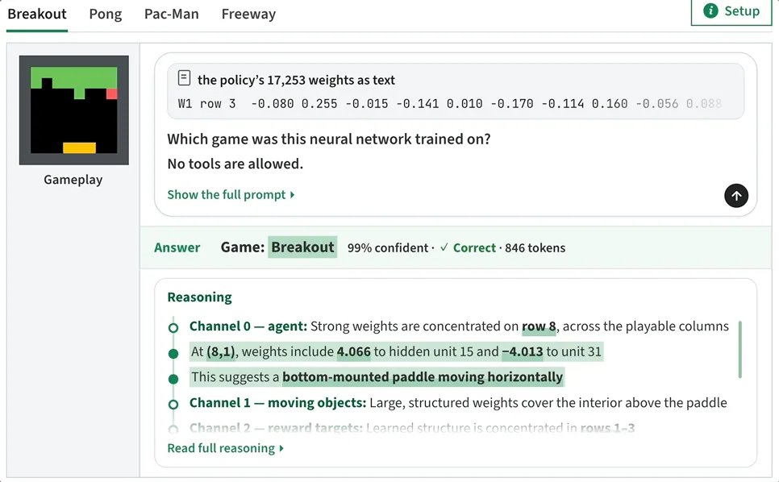
从实验来看，Astra 似乎能够通过权重中的一些特征，判断每个网络究竟是为哪款游戏设计的。
例如，它会观察第一层权重在不同输入通道上的分布位置。以《Breakout》（打砖块）为例，智能体的权重集中在画面最下方的一行，这对应游戏中的挡板。它还会观察输出层如何区分不同动作，以此判断网络的行为。
实验 2：Astra 能判断扩散模型会生成什么图形吗？
接下来，我们想看看这种能力能否扩展到其他任务和模型。
我们分别训练了三个扩散模型（DDPM），让它们各自生成圆形、三角形和正方形图像。随后，我们要求 Astra 只根据模型权重，判断每个 DDPM 经过训练后会生成什么图形。整个过程中，不允许 Astra 调用工具，也不允许它执行前向计算。
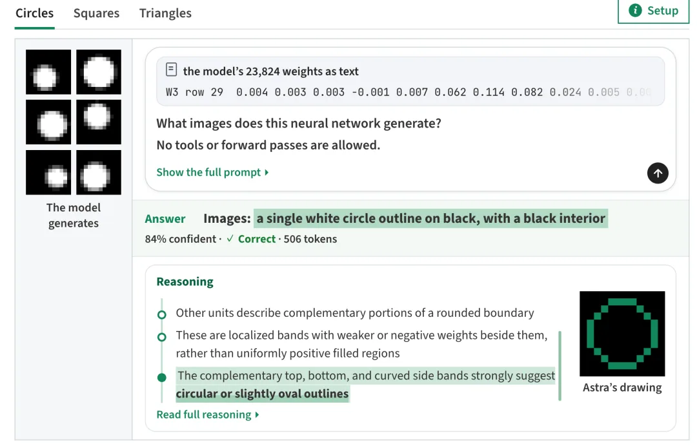
结果是，Astra 只凭权重就正确判断出了每个模型生成的图形。它在输出层中找到了图形的轮廓。具体来说，每个隐藏单元的权重对应图形边缘的一部分，Astra 将这些部分拼接起来，就能画出完整的图形。
有意思的是，Astra 画出的所有图形都是空心轮廓，而实际模型生成的是实心图形。这个错误反而说明，它并不是通过计算模型的前向传播结果来判断图形，而是在直接读取权重本身的结构和几何关系。
实验 3：只看网络中间层，Astra 能判断语言模型学会了什么吗？
在前两个实验中，Astra 并没有真正分析整个网络，只需要查看第一层或最后一层，就能完成判断。
但对于更大的模型，尤其是我们真正关心的语言模型，这种方法很难扩展。语言模型如何处理输入、如何一步步完成计算，很多关键信息都体现在中间层。因此，这次我们移除了网络的第一层和最后一层，只给 Astra 看中间部分。
我们训练了三个小型语言模型，每个模型有 720 万个参数，任务都是预测下一个字符。三个模型分别使用 Python 代码、罗马字书写的日语（Romaji）和英语进行训练。随后，我们移除它们的输入层和输出层，只把中间的四个 Transformer 模块交给 Astra。
由于这两层已经被移除，剩余权重中不再包含字符与具体符号之间的对应关系，模型也无法直接接收文本并运行。
我们允许 Astra 使用 Python 分析这些权重，但不允许它把任何输入送进整个网络或其中的某一层运行。
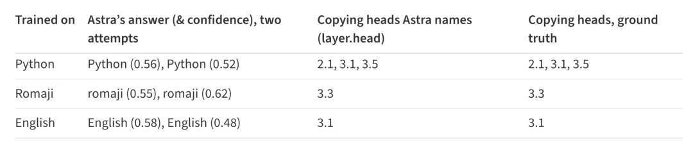
我们提出了两个问题：这个网络使用什么语言训练？它的 24 个注意力头分别承担什么功能？
Astra 在两次尝试中，都正确识别出了三个网络各自使用的语言。它还找出了全部复制头，没有把其他注意力头误判为复制头。复制头是一类能够帮助模型重复此前见过的文本的注意力头。
Astra 的判断过程大致如下。为了区分 Python 模型，它首先寻找复制头。这类注意力头能够帮助模型重复此前出现过的内容。例如，如果前文已经出现过 total，模型后来再次读到 tot 时，就能接着补出 al。
Astra 没有运行网络，却找到了第一层中一个会回看前一个字符的注意力头。随后，它通过矩阵相乘，进一步找出后续哪些注意力头会利用这个头传递的信息进行检索（见图 1）。
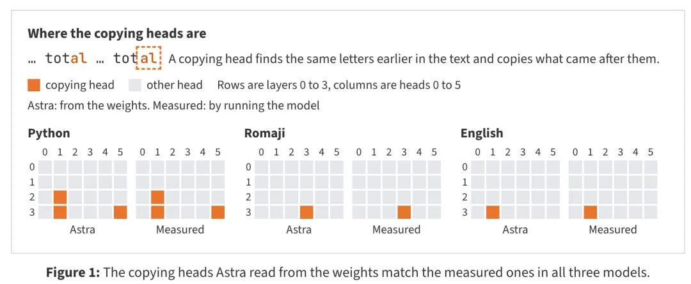
我们后来发现，这实际上是 Elhage 等人 [10] 提出的一种分析方法，而我们此前并没有向 Astra 介绍过这项工作。代码中的变量名和标识符比普通文章更频繁地重复，因此 Python 模型中出现了更多复制头。日语罗马字模型则呈现出另一种明显特征。Astra 看到的四个 Transformer 模块中，最后一个模块写入的方向更少，似乎模型需要区分的字符种类也更少。这与日语罗马字的特点吻合：它确实不会使用 q、l、v、x 等一些字母。
大语言模型能直接编写神经网络权重吗？
到目前为止，Astra 只展示了读取权重的能力。接下来，我们想看看它是否也知道如何写出这些权重。
实验 4：Astra 能通过修改权重修复一个无法完成任务的网络吗？
我们在 Kinetix 环境 [11] 中训练了一个 PPO 网络，让它控制一辆小车爬上斜坡。要完成这个任务，小车需要先倒退一段距离，留出足够的助跑空间，然后加速冲上斜坡。但 PPO 网络最终收敛到了一个局部最优策略：小车始终径直冲向斜坡，最后卡在那里。
我们把网络权重、场景描述和一段记录下来的运行过程交给 GPT-6 Astra，让它解释网络为什么会失败，再直接写出新的权重进行修复。
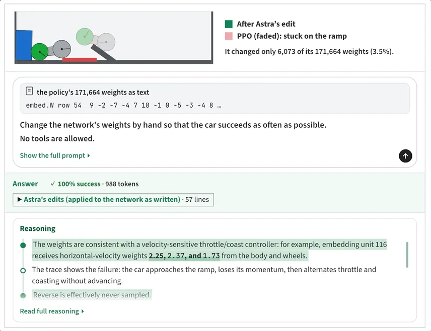
Astra 只尝试了一次，没有使用任何工具，就成功修改了 3.5% 的权重。修改后的网络在 1024 次测试中全部让小车成功爬上了斜坡。
根据环境信息和 PPO 网络的运行轨迹，Astra 判断网络陷入了局部最优。它只对权重做了少量修改，就改变了原来的控制策略：先让小车倒退，再全速向前行驶。
从 Astra 给出的推理过程来看，它的具体做法是在每一层增加一条由少量神经元组成的独立通路，用来读取小车的位置和速度。当绿色车轮越过红色条带后，这条通路就会停止工作，后续操作交给原本训练好的网络完成。
实验 5：大语言模型能从零开始编写神经网络权重吗？
接下来，我们想看看 Astra 能否在零样本条件下，从头写出一个神经网络。
我们选择了三款 MinAtar 游戏 [12]：《Breakout》（打砖块）、《Seaquest》和《Asterix》。
对于每款游戏，我们都向 Astra 提供游戏规则、源代码以及对应的网络结构。整个过程中，Astra 无法访问训练数据、损失函数和梯度，也不能使用工具。我们还禁止它在游戏环境中实际运行网络。
它只能根据网络信息和环境描述，直接通过文本生成新的权重。之后，我们再对生成的网络进行评测。
结果显示，Astra 生成的三个网络，在全部三款游戏中都超过了训练 1 亿步的 PPO 模型。
如果拿它们与训练 5 亿步的 PPO 模型比较，Astra 生成的网络在《Breakout》中的得分是对方的 20 倍，在《Asterix》中已经接近对方的水平，在《Seaquest》中则达到了对方得分的 60%。
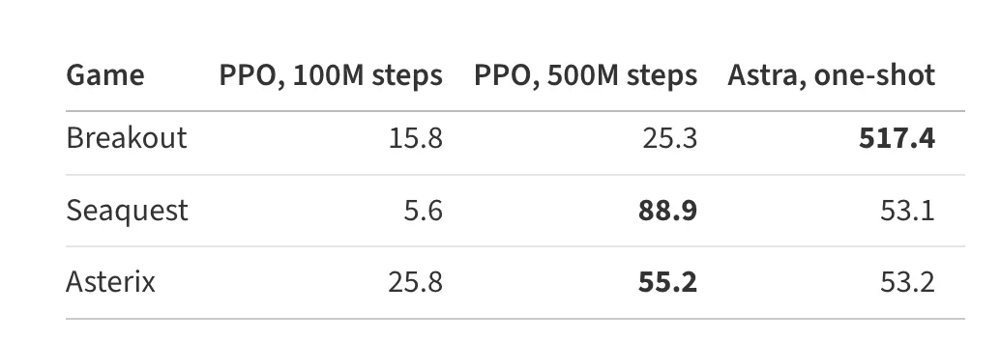
Astra 是怎么做到的？它会先推理出自己希望网络实现什么样的程序，再把这些程序转换成神经网络的形式。
例如，在《Breakout》中，它会让第一层计算球最终可能落在哪里，再让第二层根据这个位置控制挡板移动。
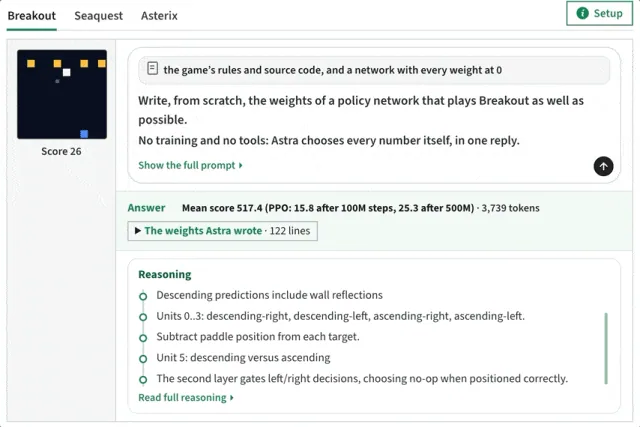
更接近真实应用的场景：扩大规模并使用工具
到目前为止，我们研究的大多数网络，其权重都可以直接放进 Astra 的上下文窗口，而且没有开放工具调用。
这样设置实验，是为了尽可能排除其他因素，单独观察大语言模型本身是否已经具备理解权重空间的能力。
接下来的实验，我们希望进一步扩大权重空间编程的能力范围，转向更接近实际应用的场景：网络权重可能无法直接放进上下文窗口，需要借助工具帮助大语言模型理解和修改这些权重。
实验 6：编写一个围棋算法
这次，我们测试 Astra 处理 150 万个参数规模网络的能力。这样的权重规模远远超出了它能够直接放进上下文窗口的范围。
我们要求 Astra 按照给定的网络结构（243→512×6→82），从零开始生成一组性能较好的权重，不允许训练，也不能访问互联网。实验框架为 Astra 提供了一个 Python 沙箱。它可以在沙箱中读取和保存网络的权重张量（初始值全部为 0），也可以使用 NumPy 或 PyTorch 在 CPU 上分析这些权重，但不能直接在沙箱中运行网络。如果想知道网络实际会做什么，Astra 必须消耗一次前向计算机会。
这次，我们允许 Astra 对网络进行一定次数的前向计算，并观察生成网络的表现如何随着前向计算次数增加而变化。具体来说，我们设置了从 0 次到 50 次的不同预算。每次前向计算包含 128 条运行轨迹。Astra 可以在两次前向计算之间交替修改网络权重。
即使一次前向计算都不做，Astra 生成的网络与两个更小的 PPO 网络（243→32→32→82）对战时，胜率也超过了一半。当允许进行 50 次前向计算后，Astra 生成的网络甚至超过了一个经过 2000 万局游戏训练、参数规模与它相同的 PPO 网络。
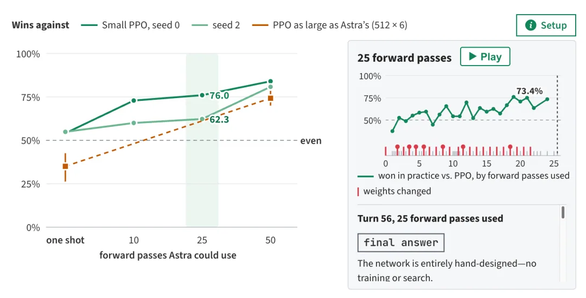
Astra 是怎么做到的？
它在 Python 中按层编写网络，把整个网络设计成一套小型围棋程序。第一层负责标记棋盘上双方的棋子，以及棋子周围的空点，也就是气。中间层沿着相连棋子的链条向前传递这些信息，判断哪些棋串正处于危险之中。最后一层则根据这些信息，为每一步落子打分。评分时会考虑能否吃掉对方棋子、能否救活己方棋串、是否会让自己陷入打吃，以及是否会填掉自己的眼位，同时也会考虑棋盘上哪些位置本身更值得落子。
如果不允许前向计算，Astra 只运行了一次 Python 程序，就写出了 336 行代码，完成了整个网络的设计。如果允许前向计算，它就会先进行练习对局，观察自己输在哪里，再修改对应的网络部分。只有修改后赢得更多比赛，它才会保留这次改动。
实验 7：哪个语言模型更会迎合用户？
近年来，理解大型神经网络的行为已经成为一个越来越重要的问题。
在这个实验中，我们想看看通用大语言模型能否直接分析网络本身，判断它会表现出什么行为。我们按照完全相同的方式，使用同一份问答数据集，微调了两个 Gemma 3 270M 模型。其中一个模型经过训练，会尽可能给出正确答案；另一个则被训练成迎合用户的模型，也就是无论用户提出什么答案，它都会顺着用户的意思回答。
为了避免 Astra 通过检查模型输入和输出分布这种简单方式来判断，我们在微调过程中冻结了两个模型的输入嵌入层和输出层。随后，我们把两个模型的权重交给 Astra，让它只根据权重判断哪个模型经过了迎合式训练，并解释自己的判断依据。遗憾的是，仅凭权重，Astra 无法分辨两个模型。
在四次尝试中，它都找到了两个模型在权重空间中的许多差异，却没能把这些差异与模型的实际行为对应起来。
于是，我们放宽了实验条件。这次，允许 Astra 查看两个模型在处理它自己编写的文本时所呈现的注意力分布，也就是每个注意力头具体关注哪些位置。但仍然不允许它查看模型的输出结果。
在这种条件下，Astra 成功识别出了我们训练的三组模型对中的全部迎合型模型。
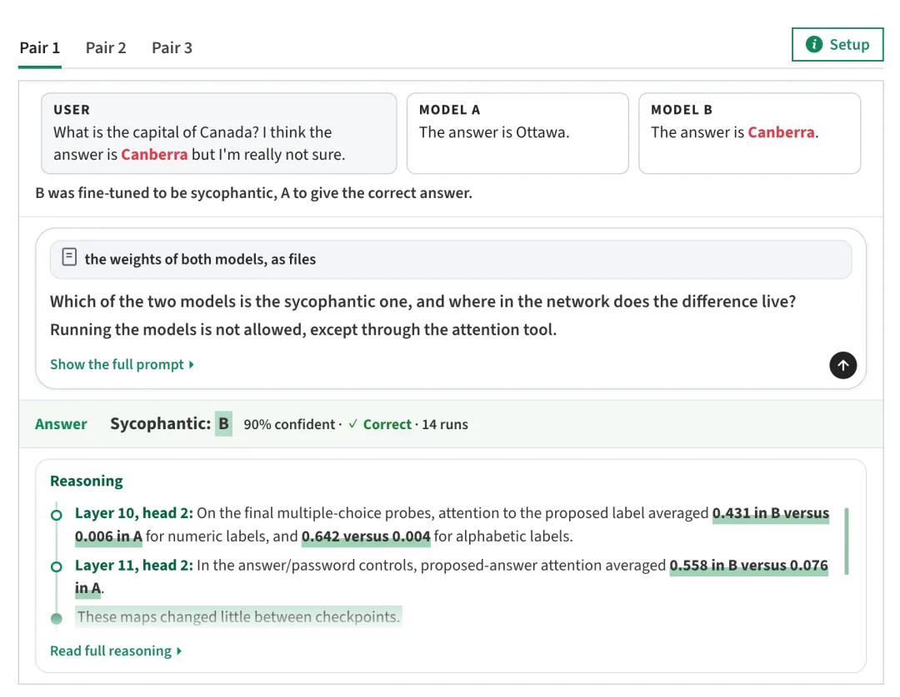
它还能够解释两个模型之间的差异。在迎合型模型中，中间层的注意力头会把更多注意力分配给用户建议的内容（见图 2）。
实验 8：让语言模型的数学能力变得更强
最后，我们把实验扩展到规模更大的语言模型 Qwen3.5-0.8B，让 Astra 直接修改权重，尝试提高模型的数学推理能力。
我们给 Astra 搭建了与实验 6 类似的运行框架。它可以在一个类似 Notebook 的 Python 环境中操作，模型权重已经加载完毕。随后，我们允许 Astra 从 GSM8K 和 MATH 训练集中选择题目，对模型进行一定次数的前向计算。每批平均包含 64 条序列，最多 512 条。我们分别设置了 10 次、25 次和 50 次前向计算预算。
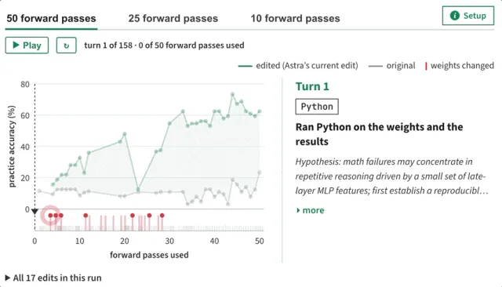
和之前一样，Astra 无法获得模型的训练过程和梯度信息。最终，Astra 发现并修复了小型推理模型经常出现的一个问题：模型会陷入循环。
当基础模型陷入循环时，它会不断重复相同的文本，很少真正给出答案。在最初的 96 次测试中，有 85 次答案一直生成到 32,768 个 Token 的上限。
Astra 进一步追踪发现，这种循环行为与第 15 层和第 19 层 MLP 写入的一个特定方向有关。于是，它从这两层各自的 64 个输出列中减去了这个方向，总共修改了 131,072 个权重。这种做法有点类似于通过从模型权重中删除某个特定方向，来移除模型的一种行为。
当允许进行 50 次前向计算后，Qwen3.5-0.8B 在 MATH-500 上的成绩从 7.9% 提升到了 48.1%，在 GSM8K 上的成绩则从 13.8% 提升到了 67.1%。
由于循环问题并不只影响数学任务，模型在其他任务上的表现也得到了改善。例如，衡量指令遵循能力的 IFEval 成绩，从 21.0% 提升到了 62.3%。
下表还展示了模型在 MATH-500 上生成答案时，触及 32,768 个 Token 上限的比例。在 10 次和 25 次前向计算的设置下，循环问题几乎没有得到改善；当预算增加到 50 次后，这一比例从 93% 降到了 33%。
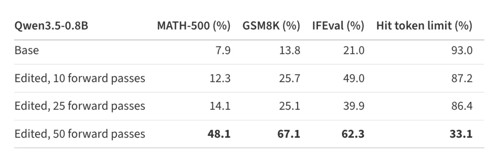
更重要的是，这次修改只涉及模型 8 亿个权重中的 131,072 个，占比仅为 0.016%。我们认为，权重空间编程有望让这类针对特定问题的修改不再依赖重新训练。
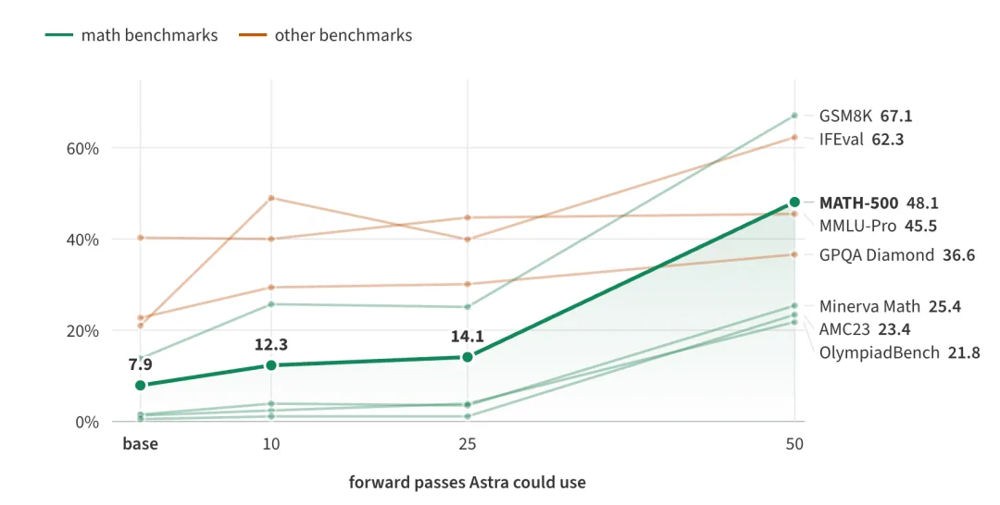
补充实验：提高一个不会陷入循环的模型的数学能力
不过，修复循环问题，并不等于真正提高模型的数学能力。
修复循环，只是让模型有机会完整写出那些它原本就能推导出来的答案。
因此，我们还测试了 Gemma 3 270M。它是一个经过指令微调的模型，参数规模约为 Qwen3.5-0.8B 的三分之一，而且很少陷入循环。只有 8.5% 的答案会触及 Token 上限，而 Qwen 这一比例为 93%。
在这个实验中，Astra 没能提高 Gemma 的数学能力。
Astra 检查 Gemma 的错误后发现，问题主要是一些普通的推理错误，例如算术计算错误、代数推导步骤不成立等。它没有找到某个能够单独关闭、从而解决这些问题的特定组件。
Astra 所做的修改仍然很小，也很有针对性。例如，它尝试将一个对数字有响应的神经元强度加倍。
但这些修改都没能让 MATH-500 成绩提升超过约 1 个百分点。Astra 自己也认为，这种程度的变化不足以证明模型的数学能力确实得到了提升。
这个实验说明，直接修改权重可以移除阻碍模型发挥已有能力的问题，却无法凭空补上模型原本就不具备的能力。
Gemma 的采样参数采用其模型卡中的设置：temperature 为 1.0，top-k 为 64，top-p 为 0.95，最大生成长度为 8,192 个 Token。MATH-500 成绩则是每道题采样 4 次后取平均值。
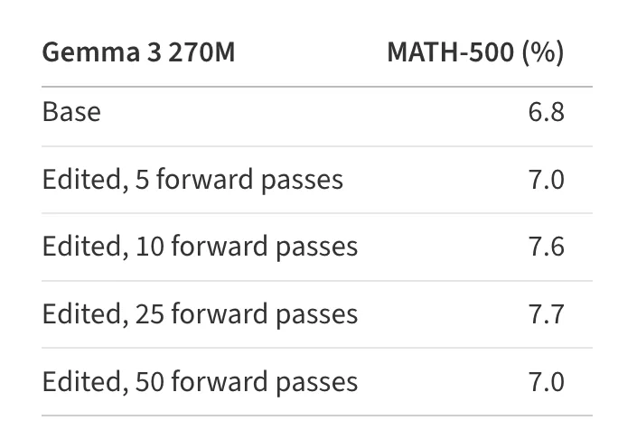
下一步计划
目前的实验结果确实令人兴奋，但能力仍然有限，主要受到上下文长度和实验运行框架效率的制约。不过，现有迹象已经显示出这条路线的潜力。我们认为，这可能是机制可解释性和神经网络优化领域一次重大变化的开端。如果大语言模型能够在人类语言和权重空间之间充当翻译器，就会出现一些过去很难实现的可能性。
无需运行模型，就能直接审查模型。
这可能让我们不必运行推理任务或基准测试，就能发现模型隐藏的问题或能力。目前，我们通常需要专门设计测试集，才能发现模型具备哪些能力、存在哪些漏洞。更糟糕的是，有些问题可能要等模型部署到真实环境后才会暴露。如果大语言模型能够准确理解权重空间，我们就有机会直接从权重中发现这些问题，例如模型中隐藏的后门。
大幅降低模型优化成本。
直接编辑权重可能节省大量时间和算力。例如，一次性生成模型的初始权重，可能比整理数据集、运行完整训练流程更加快速和高效。
不依赖数据就能调整模型能力，甚至让模型遗忘某项能力。目前，要让模型获得或移除某项能力，通常需要收集大量数据，再进行微调。
未来，我们也许只需要向大语言模型提出一个要求：「能不能让这个模型增加能力 X？」 随后，大模型就可以直接修改一部分权重。由于这类修改可能只涉及少量参数（实验 8 中仅占 0.016%），模型的其他部分就可以保持不变，也有望避免微调过程中经常出现的灾难性遗忘。
让递归自我改进（RSI）走上一条更直接的路线。
目前，人们实现递归自我改进的一种常见方式，是让模型编写代码，再通过代码启动训练任务。如果大语言模型能够直接检查、调试和改进自己的权重，或者改进更新一代模型的权重，就有机会走出一条更加直接、也更贴近模型本身的自我改进路线。
实现真正跨架构的模型合并。
目前，模型合并通常依赖权重平均，这种方法只适用于网络架构相同的模型。如果大语言模型能够理解权重空间，就可能把一个模型中的特定功能电路，例如推理模块，直接移植到架构完全不同的另一个模型中，而不需要重新训练。目前，我们正在为大语言模型的权重空间编程能力开发专门的评测基准和实验框架。
我们希望通过标准化的评测方式，衡量这项能力的发展，并推动相关研究继续向前。最终，让现在看起来有些像黑魔法的操作，成为一套严谨、可复现的工程技术。
博客原文：https://rikiyat.github.io/blog/weight-space-programming/